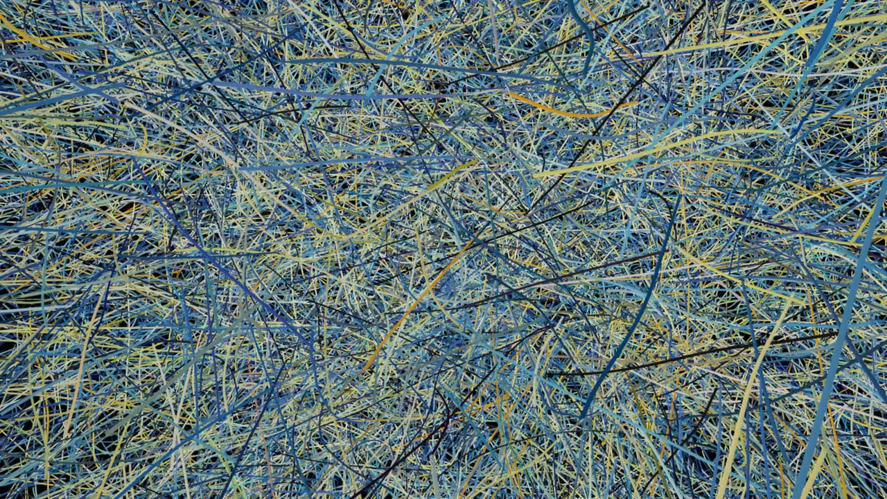

fall/winter 2017 course descriptions
courses will be offered online through google hangouts on air, with the possibility of hybrid courses being offered. in order to sign up for a class, click the sign up link provided in the course page. for more information, check for announcements on this blog or my twitter (@schizoanalytic). preview sessions in which the syllabus, expectations, and primary themes of each course will be offered the week previous to the first session. each course will carry a cost of 75USD, though price reductions will be considered on a case by case basis. click the title of the course to be redirected to the course page.
 strongart.h/mus.h 436: afrofuture//afrosurvival. seminar.
strongart.h/mus.h 436: afrofuture//afrosurvival. seminar.
taking futurism away from fascism has been the praxis of black musicians since diaspora. what is commonly referred to as afrofuturism remains the primary contemporary example of such praxis. this course challenges the contemporary understanding of afrofuturism and attempts to reframe it as afrosurvivalism. topics discussed will include p-funk, nationalism, nuclear fission, dromocracy, kanye west, and communalism.
 art.h/hist/phil/psy.g 478: situationist international. seminar.
art.h/hist/phil/psy.g 478: situationist international. seminar.
“first of all, we think the world must be changed.” with these words began the revolutionary organisation led by guy debord. with the publication of ‘the society of the spectacle,’ ‘the revolution of everyday life,’ and ‘on the poverty of student life’ came may 68. in this course, we will study the formation of situationist international, the theoretical and artistic contributions of the situationists, and the revolution of may 68.
 biol/so.lo 289: drug culture, cryptomarkets, and pharmacology. lecture//seminar.
biol/so.lo 289: drug culture, cryptomarkets, and pharmacology. lecture//seminar.
this course will explore the history of cryptomarkets such as alphabay, dream, and silk road, the experience and culture of drug use, and the pharmacology of specific drugs. topics covered will also include cryptocurrencies, pgp encryption, and psychonauts. through this course, students will also be introduced to the history and effects of the war on drugs.
hist/war.s 531: the war on terror is not taking place. lecture/seminar.
the topic of discussion for this course will be the crimes committed against the people of afghanistan, iraq, pakistan, somalia, and yemen by the us state apparatus under the guise of a war against terror and terrorism. in as much as it is possible, this course seeks to investigate the events which led to the 2001 invasion of afghanistan, the 2003 invasion of iraq, and the perpetuation of related atrocities in muslim majority countries.

poli/hist/sch.a/ecos 294: chaos and ecology. seminar.
the aim of this course is to explore and engage with the concepts presented by felix guattari through guided reading and discussion of a selection of his independent works. topics discussed will include ecology, schizoanalysis, fascism, revolution, and capitalism.
 psy.g 213: introduction to psychogeographical research. seminar.
psy.g 213: introduction to psychogeographical research. seminar.
psychogeography, as defined by debord, is “the study of the precise laws and specific effects of the geographical environment, consciously organized or not, on the emotions and behavior of individuals.” this course will explore the works of baudelaire, chtcheglov, debord, and related theorists on the topic of the dérive, unitary urbanism, and ultimately psychogeography.
 theo/econ 363: critique of political economy. seminar.
theo/econ 363: critique of political economy. seminar.
in this course, we will spend the vast majority of our time performing a close reading of the 1859 book ‘a contribution to the critique of political economy’ written by karl marx, selections from the collection ‘chaosophy’ and ‘the anti-oedipus papers’ by felix guattari, the 1988 essay ‘kant, capital, and the prohibition of incest’ and 1993 essay ‘machinic desire’ by nick land in order to best present a critique of political economy which applies not just to ‘proto-capitalism’ but to the contemporary manifestations of global capital.